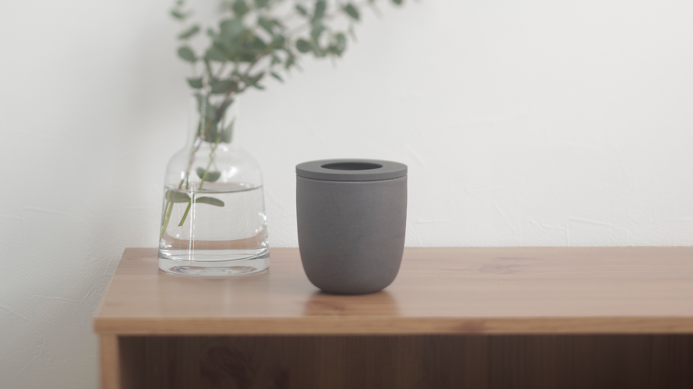
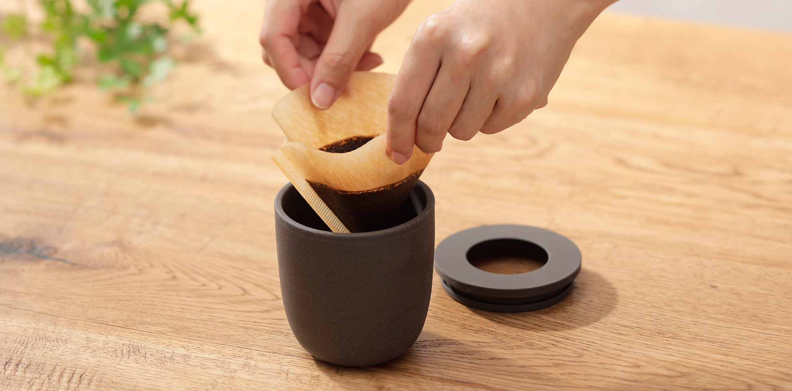
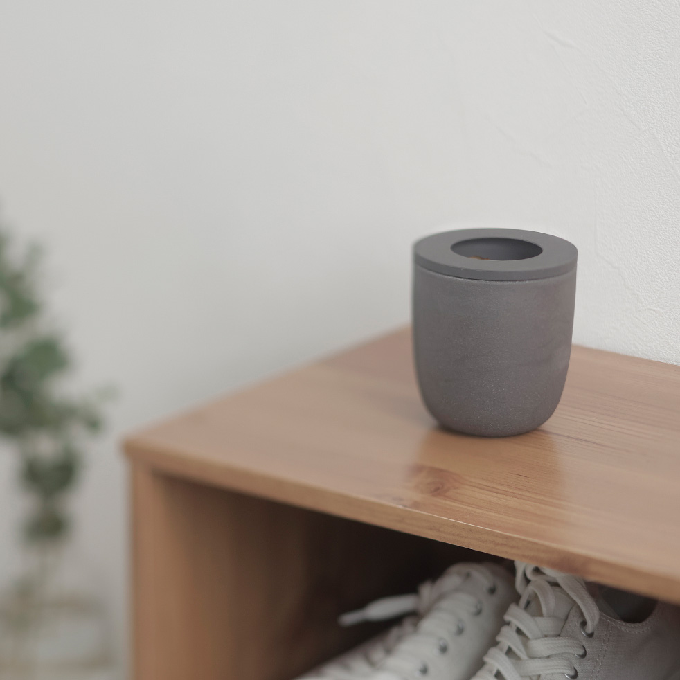
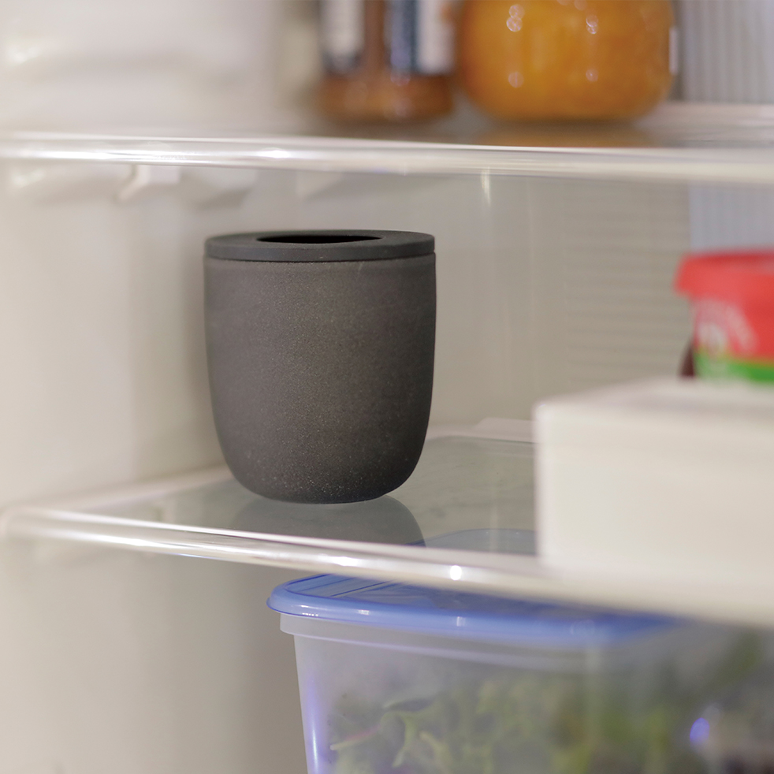

TODAY'S TOPIC
"コーヒーかす"でお部屋を消臭
創業140年、暮らしの用品をデザインするMARNAから「コーヒーかす消臭ポット」が発売されました。

img source -(https://marna.jp/aboutus/)
こちらはコーヒーを飲んだあとに捨てているコーヒーかすを消臭剤として再利用するためのアイテムです。昨日もご登場いただいたUCC上島珈琲によると、コーヒーの抽出かすは活性炭以上に脱臭効果があるらしいんです。しかも、乾燥したコーヒーかすはもちろんのこと、湿ったかすは活性炭の約5倍もの脱臭効果が見込めるとのことです。活性炭の効果がどのくらいかパッと浮かびませんが、良く聞くし黒いのでなんか効果強そうですね。。！

img source -(https://marna.jp/aboutus/)
上の写真のように、抽出を終えた後にそのままフィルターごと容器に入れるだけですね。それで簡易消臭剤の完成です。コーヒーの消臭効果は知っていて個人的にやってはいたけど専用の容器は持ってなかった、って人もいるのではないでしょうか。私も学生時代にカフェバイトしていた時に、先輩がコーヒーかすの一部をお店のドリンクカップに入れて消臭剤にしているのを見てその効果を知りました。


img source -(https://marna.jp/aboutus/)
この容器の巨大版を作って、地域やマンションのゴミ収集所にみんながコーヒーかすを捨てれたらちょっと匂い緩和されたりしないでしょうか？それをまたまとめてスタバさんあたりが回収してさらにリサイクルしてくれたら良いですよね。